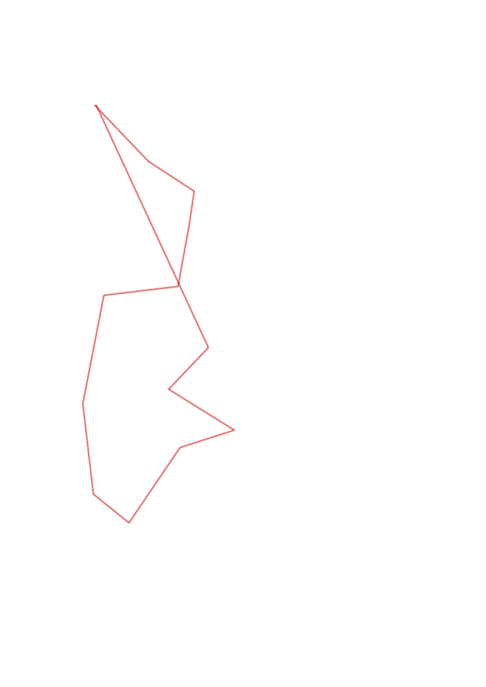
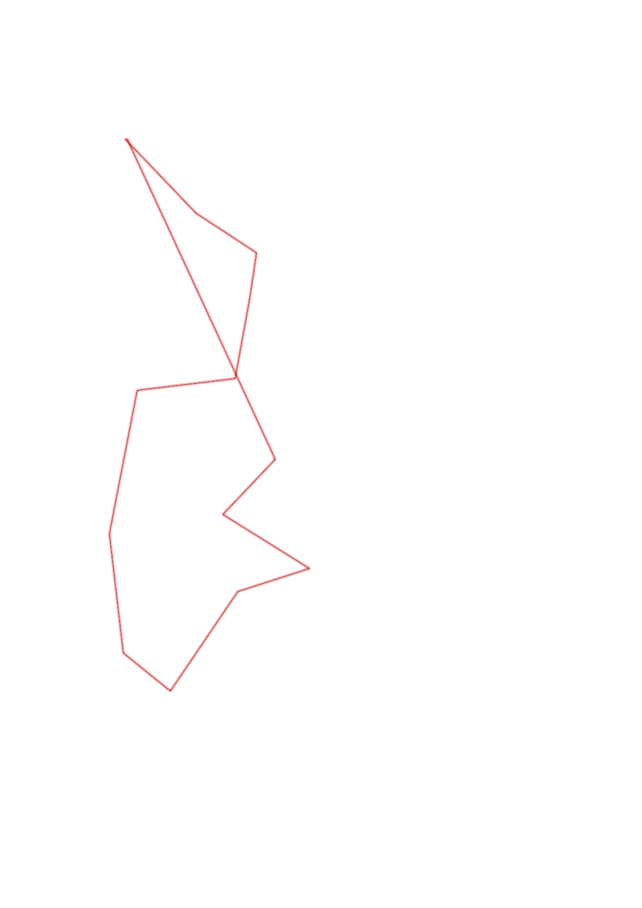

| Control |
Points |
Time Punched |
Distance |
Your Time |
Pace |
Place |
Fastest Time |
Median Time |
% Behind Fastest |
| 42 |
40 |
|
0.48 |
0:02:11 |
04:32 |
1 / 7 |
0:02:11 |
0:02:17 |
0% |
| 95 |
90 |
|
0.34 |
0:05:01 |
14:45 |
4 / 6 |
0:02:25 |
0:04:50 |
107% |
| 43 |
40 |
|
0.22 |
0:01:27 |
06:35 |
1 / 6 |
0:01:27 |
0:01:53 |
0% |
| 75 |
70 |
|
0.38 |
0:01:45 |
04:36 |
1 / 6 |
0:01:45 |
0:03:10 |
0% |
| 56 |
50 |
|
0.46 |
0:04:20 |
09:25 |
1 / 1 |
0:04:20 |
0:04:20 |
0% |
| 76 |
70 |
|
0.68 |
0:04:01 |
05:54 |
1 / 1 |
0:04:01 |
0:04:01 |
0% |
| 67 |
60 |
|
0.56 |
0:14:21 |
25:37 |
1 / 1 |
0:14:21 |
0:14:21 |
0% |
| 74 |
70 |
|
0.28 |
0:01:44 |
06:11 |
1 / 2 |
0:01:44 |
0:01:53 |
0% |
| 94 |
90 |
|
0.56 |
0:05:05 |
09:04 |
1 / 1 |
0:05:05 |
0:05:05 |
0% |
| 61 |
60 |
|
0.35 |
0:03:15 |
09:17 |
1 / 2 |
0:03:15 |
0:03:16 |
0% |
| 92 |
90 |
|
0.48 |
0:03:32 |
07:21 |
1 / 2 |
0:03:32 |
0:04:15 |
0% |
| 103 |
100 |
|
0.36 |
0:18:26 |
51:12 |
1 / 1 |
0:18:26 |
0:18:26 |
0% |
| Finish |
0 |
|
1.65 |
0:12:52 |
07:47 |
1 / 1 |
0:12:52 |
0:12:52 |
0% |
Total Distance Covered: 6.8km
Points Scored: 830
Late Penalty: -360
Final Score: 470
Total Time: 1hours 18minutes 0seconds
Efficiency: 69.12 points/km
 
